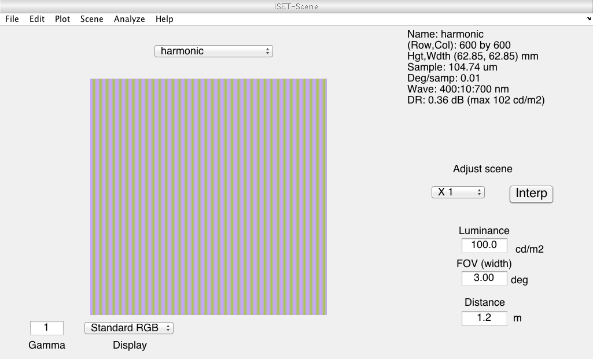
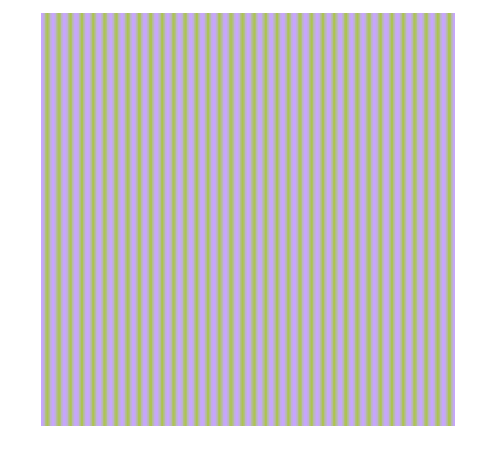
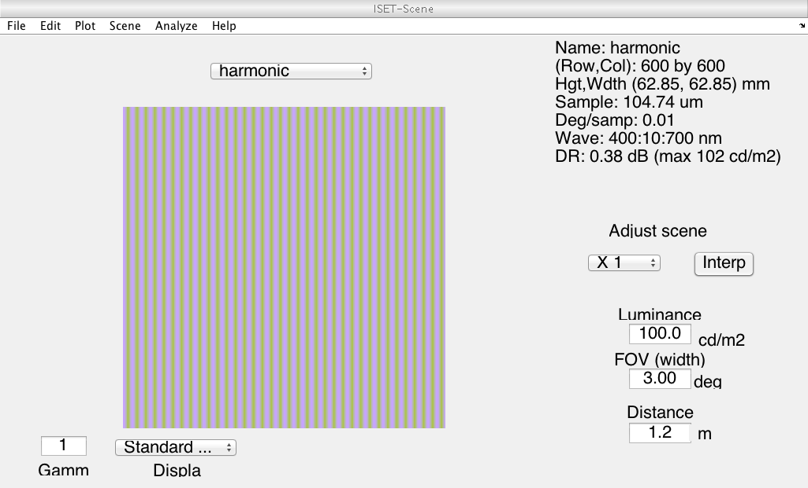

Contents
- Clear, define, etc.
- Hello
- Supress irritating warnings
- Frozen noise, so that we can validate OK
- Figure parameters
- Compute parameters
- Set up output names
- Color matching functions
- Set up optical image
- Set up sensor
- Create the scene
- Optional. Muck with photons to make a cone isolationg modulation.
- Look at scene
- Render the scene as sRGB
- Compute optical image
- Compare actual and desired spectral modulations
- Render the oi as sRGB
- Make sensor image
- Demosaic
- Isetbio cone demosaicing
- Freeman method demosaicing
- Restore warning state
- Rethrow error
function varargout = FigBasicAliasing(varargin) % % Use linear interpolation to compute aliases for gratings. % % This has a number of parameters. To produce the S cone alias pair % for Figure 4 of the Annual Review paper, set % EXTRA_CHECKS = 1; % sceneDegrees = 3; % extractDegrees = 1; % SONLY = 1; % gratingCPD = 12; % desiredSContrast = 0.75; % SCALESRGBMethod = 1; % Then use sRGBOptics_12cpd_noblur_sConeMod_75.tiff as the stimulus image % and sRGBInterp_12cpd_noblur_sConeMod_75.tiff as the alias of the stimulus % image. These two iamges correspond to the same FOV in degrees but a % different size in pixels. That makes sense, as no effort was made to % match pixels per degree in the scene to cones per degree in the sensor. % % There are some fussy things in this script. % % 1) If you run an S-cone isolating modulation through the optics with % chromatic aberration, it doesn't isolate the S-cones any more by the time % it reaches the retina. The easiest way to deal with this for purposes of % making figures is to make figures that don't include the optics. But, % the code will recompute the modulation so as to silence the S-scones if % you ask it to. % % 2) I originally wrote this with the demosaicing done locally. Now that % functionality is ISETBIO, so this also calls the ISETBIO method. I spent % a lot of time trying to track down why the sRGB renderings done the two % ways were different. Turns out it has to do with where you clip and % where you scale, and in what order. Under most circumstances this % doesn't matter, but if you have a lot of ringing from your % interpolation, then the image your rendering has out of gamut pixels and % then it matters. Although most of the checks implemented here do check % out, I left them in when you set EXTRA_CHECKS = 1. Perhaps instructive % some day when something else breaks. % % 3) It is fussy how to compare renderings across scenes, optical images, % and sRGB images obtained from cones. That is because the units aren't % easily compared across these levels. You could track the scale factors % in the forward direction and then apply them in the reverse direction, so % that (say), the optical image and demosaic'd XYZ images were referred % back out to scene radiance by the appropriate scale factors. I didn't do % that because, well, life is short. What I did do is have an option to % render each SRGB image by setting its mean to 0.5 in the SRGB primary % space. This makes the scale nicely comparable for the figures I am % currently interested in using. It might not always work well, though. % To get this behavior, set both EXTRA_CHECKS = 1and SCALESRGBMethod = 1. % % 4) Also note that there is some fussing of spatial scale that needs to % happen to make the fov of the scene and optical images equal to that of % the sensor image. This results in the pixel resolutoin being different % between the two representations. This could probably be fixed up if one % thought through the pixels per degree parameter in the original scene % specification, which I didn't. If one fixed this up, then one could in % turn push the final alias back through the simulation chain and verify % that it really was an alias by comparing the cone isomerization rates % directly. % % It is possible we should push the scaling method as an option into the % ISETBIO sensor demosaicing routine. Or, track the scale factors. What I % do find is that the ISETBIO method of rendering produced strange results % after demosaicing when there was considerable aliaising. % % 3/23/15 dhb Wrote it. % 6/29/15 dhb Fix way we set up coneP to be more robust -- old less robust code got broken % by some lower level change. varargout = UnitTest.runValidationRun(@ValidationFunction, nargout, varargin); end function ValidationFunction(runTimeParams)
Clear, define, etc.
ieInit;
Hello
UnitTest.validationRecord('SIMPLE_MESSAGE', sprintf('%s',mfilename)); outputDir = sprintf('%s_Output',mfilename); if (~exist(outputDir,'dir')) mkdir(outputDir); end
Supress irritating warnings
warnS = warning('off','images:initSize:adjustingMag'); try
Frozen noise, so that we can validate OK
randomSeedValue = 26;
rng(randomSeedValue);
Figure parameters
curDir = pwd;
masterFigParamsDir = getpref('bfScripts','masterFigParamsDir');
cd(masterFigParamsDir);
figParams = MasterFigParams;
cd(curDir);
if (exist('../SecondaryFigParams','file'))
cd ..
figParams = SecondaryFigParams(figParams);
cd(curDir);
end
figParams.resizeScale = 1;
UnitTest.validationData('figParams', figParams);
Compute parameters
You can set these to do whatever you feel like
if (runTimeParams.inStandAloneMode) EXTRA_CHECKS = 1; sceneDegrees = 3; extractDegrees = 1; DELTAFCNOPTICS = 1; SONLY = 1; gratingCpd = 12; desiredSContrast = 0.75; SCALESRGBMethod = 1; % This branch is executed when you run from a validation script, and % should be left alone so that the parameters at runtime match those used % when the validation data were stored. else EXTRA_CHECKS = 1; sceneDegrees = 3; extractDegrees = 1; DELTAFCNOPTICS = 1; SONLY = 1; gratingCpd = 12; desiredSContrast = 0.75; SCALESRGBMethod = 1; end
Set up output names
if (DELTAFCNOPTICS) opticsStr = 'noblur'; else opticsStr = 'blur'; end if (SONLY) sConeStr = ['sConeMod_' num2str(round(100*desiredSContrast))]; else sConeStr = 'achromMod'; end outputSuffix = sprintf('_%dcpd_%s_%s',gratingCpd,opticsStr,sConeStr);
Color matching functions
S = [400 10 31];
wls = SToWls(S);
load('T_xyz1931');
T_xyz = SplineCmf(S_xyz1931,T_xyz1931,S);
UnitTest.validationData('S', S);
UnitTest.validationData('T_xyz', T_xyz);
Set up optical image
Do this early so we have the OTF when we need it.
oi = oiCreate('human'); oi = opticsSet(oi,'off axis method','skip'); % Allow delta function optics if (DELTAFCNOPTICS) %oi = oiSet(oi,'optics model','skip'); % Kluge below, using 'skip seems cleaner % % Replace OTF with ones to get delta function optics % But, it seems to work just right. optics = oiGet(oi,'optics'); OTFData = opticsGet(optics,'otfdata'); OTFDeltaData = ones(size(OTFData)); optics = opticsSet(optics,'otfdata',OTFDeltaData); oi = oiSet(oi,'optics',optics); end
Set up sensor
Do this early to get cone spectral sensitivities
The isetbio cone default is for 200 linear cones per degree in the fovea. This seems high for the central 1 degree overall, but might be correct right at the center. So we adjust via pixel size.
For convenience, we normalize the energy unit fundamentals to a max of 1. This is because we aren't going to try to get the units right in the inverse transform from isomerization to XYZ, below.
coneP = coneCreate('human'); coneP = coneSet(coneP,'spatial density',[0.0 0.625 0.325 .05]); sensor = sensorCreate('human',[],coneP); sensor = sensorSet(sensor, 'noise flag', 0); sensor = sensorSet(sensor,'exp time',0.050); sensor = sensorSet(sensor,'rows',128); sensor = sensorSet(sensor,'cols',128); pixel = sensorGet(sensor,'pixel'); pixel = pixelSet(pixel,'sizesamefillfactor',(200/120)*[1.5e-6 1.5e-6]); sensor = sensorSet(sensor,'pixel',pixel); T_conesQE = sensorGet(sensor,'spectral qe')'; T_conesQE = T_conesQE(2:4,:); T_cones = EnergyToQuanta(wls,T_conesQE')'; T_cones = T_cones/max(T_cones(:)); UnitTest.validationData('T_conesQE', T_conesQE); UnitTest.validationData('T_cones', T_cones);
Create the scene
Choices are: 'harmonic'
Code for reading in a hyperspectral image here is in draft 0 of this code, but was removed from here just to keep things a bit simpler.
sceneType = 'harmonic'; switch (sceneType) case 'harmonic' % Nice simple sinusoid. parms.freq = round(gratingCpd*sceneDegrees); parms.contrast = 1; parms.ph = 0; parms.ang= 0; parms.row = 600; parms.col = 600; parms.GaborFlag=0; scene = sceneCreate('harmonic',parms); scene = sceneSet(scene,'wave',wls'); scene = sceneSet(scene,'fov',sceneDegrees); otherwise error('Unknown scene type'); end
Optional. Muck with photons to make a cone isolationg modulation.
This is moderately straightforward if we don't worry about chromatic aberration, but gets trikier if we do. See below for method.
if (SONLY) % Get photon image from scene scenePhotonsInitial = sceneGet(scene,'photons'); % Get mean level of the pattern, so that we can extract what % the modulation around this is. for w = 1:length(wls) temp = scenePhotonsInitial(:,:,w); backgroundSpectrum(w) = mean(temp(:)); end backgroundSpectrum = backgroundSpectrum'; % Define an identity basis and expresss the background with % respect to it B_primary = 3*max(backgroundSpectrum(:))*eye(S(3)); backgroundPrimary = B_primary\backgroundSpectrum; % Use silent substitution toolbox machinery to find us a % spectral modulation that isolates the S cones. whichPrimariesToPin = [1 size(B_primary,1)]; primaryHeadRoom = 0.05; ambientSpd = zeros(size(B_primary,2),1); maxPowerDiff = 10000*max(backgroundSpectrum(:)); whichReceptorsToTarget = [3]; whichReceptorsToIgnore = []; whichReceptorsToMinimize = []; modulationPrimary = ReceptorIsolate(T_conesQE,whichReceptorsToTarget, whichReceptorsToIgnore, whichReceptorsToMinimize, ... B_primary, backgroundPrimary, backgroundPrimary, whichPrimariesToPin,... primaryHeadRoom, maxPowerDiff, [], ambientSpd); % Check that we got a sensible modulation with desired properties backgroundReceptors = T_conesQE*(B_primary*backgroundPrimary + ambientSpd); modulationReceptors = T_conesQE*B_primary*(modulationPrimary - backgroundPrimary); contrastReceptors = modulationReceptors ./ backgroundReceptors; fprintf('Maximized contrasts\n'); for n = 1:size(T_conesQE,1) fprintf('\tPre-blur unmodified spectra, cone class %d contrast = %0.4f\n',n,contrastReceptors(n)); end modSpecFig = figure; clf; hold on plot(wls,modulationPrimary,'r'); plot(wls,backgroundPrimary,'k'); ylim([0 1]); % Muck with the photons in the scene to make it the desired % spectral modulation. We also adjust maximized contrast here % to give desired contrast. modulationSpectrum = B_primary*(modulationPrimary - backgroundPrimary); modulationSpectrum = (desiredSContrast/contrastReceptors(3))*modulationSpectrum; modulationReceptors = T_conesQE*modulationSpectrum; contrastReceptors = modulationReceptors ./ backgroundReceptors; fprintf('After contrast adjust\n'); for n = 1:size(T_conesQE,1) fprintf('\tPre-blur unmodified spectra, cone class %d contrast = %0.4f\n',n,contrastReceptors(n)); end scenePhotons = zeros(size(scenePhotonsInitial)); for w = 1:length(wls) temp = scenePhotonsInitial(:,:,w); imageMean = mean(temp(:)); modulation = temp-imageMean; modulation = modulation/max(modulation(:)); modulation = modulation*modulationSpectrum(w); temp = imageMean+modulation; scenePhotons(:,:,w) = temp; end scene = sceneSet(scene,'photons',scenePhotons); minPhotons = min(scenePhotons(:)); maxPhotons = max(scenePhotons(:)); fprintf('Scene, min/max photons: %0.2g, %0.2g\n',minPhotons,maxPhotons); end
Maximized contrasts Pre-blur unmodified spectra, cone class 1 contrast = -0.0000 Pre-blur unmodified spectra, cone class 2 contrast = -0.0000 Pre-blur unmodified spectra, cone class 3 contrast = 1.0000 After contrast adjust Pre-blur unmodified spectra, cone class 1 contrast = -0.0000 Pre-blur unmodified spectra, cone class 2 contrast = -0.0000 Pre-blur unmodified spectra, cone class 3 contrast = 0.7500 Scene, min/max photons: 5e+14, 7.2e+15
Look at scene
vcAddAndSelectObject(scene); sceneWindow;
Render the scene as sRGB
tempHyperspectralQuantal = scene.data.photons;
[mScene,nScene,~] = size(tempHyperspectralQuantal);
rowBorderScene = round((mScene - mScene*extractDegrees/sceneDegrees)/2);
colBorderScene = round((nScene - nScene*extractDegrees/sceneDegrees)/2);
tempHyperspectralEnergy = zeros(size(tempHyperspectralQuantal));
for w = 1:length(wls)
temp = tempHyperspectralQuantal(:,:,w);
temp = temp(:);
tempQuantal = QuantaToEnergy(wls(w),temp);
tempHyperspectralEnergy(:,:,w) = reshape(tempQuantal,mScene,nScene);
end
sensorXYZImage = zeros(mScene,nScene,3);
for i = 1:length(wls)
sensorXYZImage(:,:,1) = sensorXYZImage(:,:,1) + T_xyz(1,i)*tempHyperspectralEnergy(:,:,i);
sensorXYZImage(:,:,2) = sensorXYZImage(:,:,2) + T_xyz(2,i)*tempHyperspectralEnergy(:,:,i);
sensorXYZImage(:,:,3) = sensorXYZImage(:,:,3) + T_xyz(3,i)*tempHyperspectralEnergy(:,:,i);
end
[sceneXYZCal,nX,nY] = ImageToCalFormat(sensorXYZImage);
sceneXYZCal = sceneXYZCal/max(sceneXYZCal(:));
srgbPrimaryCal = XYZToSRGBPrimary(sceneXYZCal);
sRGBMeanScaleFactor = nanmean(srgbPrimaryCal(:));
sRGBCal = SRGBGammaCorrect(0.5*srgbPrimaryCal/sRGBMeanScaleFactor,0);
sceneSRGBImage = uint8(CalFormatToImage(sRGBCal,nX,nY));
figure; clf;
imshow(sceneSRGBImage);
imwrite(sceneSRGBImage(rowBorderScene:end-rowBorderScene,colBorderScene:end-colBorderScene,:),fullfile(outputDir,[mfilename '_' 'sRGBScene' outputSuffix '.' figParams.imType]),figParams.imType);
UnitTest.validationData('sceneSRBImage', sceneSRGBImage);
 Compute optical image
oi = oiCompute(oi,scene);
tempHyperspectralQuantal = oiGet(oi,'photons');
[mOi,nOi,~] = size(tempHyperspectralQuantal);
Compare actual and desired spectral modulations
Fix up as necessary. This step is necessary for the S-cone isolating modulation, because we want it to be S-cone isolating on the retina, and chromatic aberration will modify the initially presented stimulus.
This counts on the fact that we have a grating stimulus, so that the effect of blurring is more or less the same at all pixels up to a scale factor.
I also tried handling this by using the OTF directly, but it didn't work very well. It may be that I didn't fully debug things, but I suspect that comptuational splatter was screwing me up -- given the frequency sampling, an arbitrary frequency grating will not have its power all at one sf in the frequency domain and that makes things a bit tricky.
if (SONLY) for w = 1:length(wls) temp = tempHyperspectralQuantal(:,:,w); backgroundSpectrumActual(w) = mean(temp(:)); end backgroundSpectrumActual = backgroundSpectrumActual'; pixelSpectrumActual = squeeze(tempHyperspectralQuantal(round(mOi/2),round(nOi/2),:)); modulationSpectrumActual = pixelSpectrumActual-backgroundSpectrumActual; modulationSpectrumCompare = modulationSpectrum*(modulationSpectrum\modulationSpectrumActual); figure; hold on plot(wls,backgroundSpectrumActual,'k'); plot(wls,modulationSpectrumCompare+backgroundSpectrumActual,'r','LineWidth',2); plot(wls,modulationSpectrumActual+backgroundSpectrumActual,'g'); % Fix up relative modulation spectrum % % First get OTF, dealing with the divide by zero problem index = find(modulationSpectrum ~= 0); effectiveOTFRelative = zeros(size(modulationSpectrum)); effectiveOTFRelative(index) = modulationSpectrumActual(index) ./ modulationSpectrumCompare(index); index1 = find(modulationSpectrum == 0); effectiveOTFRelative(index1) = mean(effectiveOTFRelative(index)); % Precompensate modulation spectrum and scale to match % original scene modulation newModulationSpectrumRelative = modulationSpectrum ./ effectiveOTFRelative; newModulationSpectrum = newModulationSpectrumRelative*(newModulationSpectrumRelative\modulationSpectrum); figure; clf; hold on plot(wls,backgroundSpectrum,'k'); plot(wls,modulationSpectrum+backgroundSpectrum,'r'); plot(wls,newModulationSpectrum+backgroundSpectrum,'g'); % Report the cone contrasts pre blur for this modified spectrum, just % as a reality check. backgroundReceptors = T_conesQE*backgroundSpectrum; modulationReceptors = T_conesQE*newModulationSpectrum; contrastReceptors = modulationReceptors ./ backgroundReceptors; fprintf('Contrasts for modified spectra\n'); for n = 1:size(T_conesQE,1) fprintf('\tPre-blur modified spectra, cone class %d contrast = %0.4f\n',n,contrastReceptors(n)); end % Rewrite the scene with new modulation newScenePhotons = zeros(size(scenePhotonsInitial)); for w = 1:length(wls) temp = scenePhotonsInitial(:,:,w); imageMean = mean(temp(:)); modulation = temp-imageMean; modulation = modulation/max(modulation(:)); modulation = modulation*newModulationSpectrum(w); temp = imageMean+modulation; newScenePhotons(:,:,w) = temp; end scene = sceneSet(scene,'photons',newScenePhotons); vcAddAndSelectObject(scene); sceneWindow; % Check newMinPhotons = min(newScenePhotons(:)); newMaxPhotons = max(newScenePhotons(:)); fprintf('Modified scene, min/max photons: %0.2g, %0.2g\n',newMinPhotons,newMaxPhotons); % Recompute the optical image and hope for the best oi = oiCompute(oi,scene); end vcAddAndSelectObject(oi); oiWindow; UnitTest.validationData('scene', scene); UnitTest.validationData('oi', oi);
Contrasts for modified spectra Pre-blur modified spectra, cone class 1 contrast = -0.0010 Pre-blur modified spectra, cone class 2 contrast = -0.0010 Pre-blur modified spectra, cone class 3 contrast = 0.7499 Modified scene, min/max photons: 5e+14, 7.2e+15
Render the oi as sRGB
rowExtraBorderOi = round((mOi-mScene)/2);
colExtraBorderOI = round((nOi-nScene)/2);
tempHyperspectralEnergy = zeros(size(tempHyperspectralQuantal));
for w = 1:length(wls)
temp = tempHyperspectralQuantal(:,:,w);
temp = temp(:);
tempQuantal = QuantaToEnergy(wls(w),temp);
tempHyperspectralEnergy(:,:,w) = reshape(tempQuantal,mOi,nOi);
end
oiXYZImage = zeros(mOi,nOi,3);
for i = 1:length(wls)
oiXYZImage(:,:,1) = oiXYZImage(:,:,1) + T_xyz(1,i)*tempHyperspectralEnergy(:,:,i);
oiXYZImage(:,:,2) = oiXYZImage(:,:,2) + T_xyz(2,i)*tempHyperspectralEnergy(:,:,i);
oiXYZImage(:,:,3) = oiXYZImage(:,:,3) + T_xyz(3,i)*tempHyperspectralEnergy(:,:,i);
end
[oiXYZCal,nX,nY] = ImageToCalFormat(oiXYZImage);
oiXYZCal = oiXYZCal/max(oiXYZCal(:));
srgbPrimaryCal = XYZToSRGBPrimary(oiXYZCal);
sRGBMeanScaleFactor = nanmean(srgbPrimaryCal(:));
sRGBCal = SRGBGammaCorrect(0.5*srgbPrimaryCal/sRGBMeanScaleFactor,0);
oiSRGBImage = uint8(CalFormatToImage(sRGBCal,nX,nY));
figure; clf;
imshow(oiSRGBImage);
imwrite(oiSRGBImage(rowExtraBorderOi+rowBorderScene:end-rowBorderScene-rowExtraBorderOi,colExtraBorderOI+colBorderScene:end-colBorderScene-colExtraBorderOI,:), ...
fullfile(outputDir,[mfilename '_' 'sRGBOptics' outputSuffix '.' figParams.imType]),figParams.imType);
UnitTest.validationData('oiSRGBImage', oiSRGBImage);
Make sensor image
[sensor, ~] = sensorSetSizeToFOV(sensor,sceneDegrees,scene,oi);
sensor = sensorCompute(sensor,oi);
vcAddAndSelectObject(sensor); sensorWindow('scale',1);
UnitTest.validationData('sensor', sensor);
Demosaic
cfa = sensorGet(sensor,'cfa'); mosaicImage = sensorGet(sensor,'photons'); [imageHeight,imageWidth] = size(mosaicImage); % Use griddata to do separate submosaic interpolation % % Be sure to deal with isetbio's indexing that 1 -> black. method = 'linear'; [X,Y] = meshgrid(1:imageWidth,1:imageHeight); nCones = zeros(size(T_conesQE,1),1); for n = 1:size(T_conesQE,1) index = find(cfa.pattern == n+1); nCones(n) = length(index(:)); x1 = X(index); y1 = Y(index); z1 = mosaicImage(index); interpImageLMS(:,:,n) = griddata(x1,y1,z1,X,Y,method); fprintf('Cone class %d, min = %0.2g, max = %0.2g\n',n,min(z1(:)),max(z1(:))); end for n = 1:size(T_conesQE,1) fprintf('Fraction cone class %d = %0.2f\n',n,nCones(n)/sum(nCones)); end fprintf('Total number of cones %d, expected %d\n',sum(nCones),imageWidth*imageHeight); UnitTest.assertIsZero(sum(nCones)-imageWidth*imageHeight,'Difference from expected total number of cones',0); UnitTest.validationData('interpImageLMS', interpImageLMS); % Just checking. T_cones ought to be proportional to T_cones_ss2, more or % less. It is. The small differenes are due to slightly different % tabulations of the Stockman-Sharpe fundamentals in PTB and ISETBIO. if (EXTRA_CHECKS) load T_cones_ss2 figure; clf; hold on plot(wls,T_cones','r'); plot(wls,T_cones(1,:)'/max(T_cones(1,:)),'b'); plot(wls,T_cones(2,:)'/max(T_cones(2,:)),'b'); plot(wls,T_cones(3,:)'/max(T_cones(3,:)),'b'); plot(SToWls(S_cones_ss2),T_cones_ss2','g'); xlabel('Wavelength (nm)'); ylabel('Sensitivity (energy units)'); title('Check on cone sensitivities'); clear T_cones_ss2 S_cones_ss2 end % Render by converting from LMS to sRGB. % % Start by finding matrix that takes LMS to XYZ. We use % T_cones in the conversion, because T_cones is in energy % units but scaled consistently with the quantal efficiencies % used to compute the isomerizations. % % The absolute units here are not correct, because we'd have to % back from isomerization out to cd/m2 in order to get them correct, % and that would be a pain. M_LMSToXYZ = ((T_cones)'\(T_xyz'))'; if (EXTRA_CHECKS) T_xyzCheck = M_LMSToXYZ*T_cones; figure; clf; hold on plot(wls,T_xyz','k'); plot(wls,T_xyzCheck','r'); xlabel('Wavelength (nm)'); ylabel('XYZ'); title('LMS -> XYZ Check'); end % Here are the xform matrices that sensorDemosaicCones is using, % transposed for PTB format. if (EXTRA_CHECKS) M_lms2xyz = [1.7896 -1.4694 2.1504 0.6079 0.4651 -0.2236 -0.0499 0.0923 10.6431]; M_xyz2srgb = [3.2410 -1.5374 -0.4986 -0.9692 1.8760 0.0416 0.0556 -0.2040 1.0570]; end % The exact order of clipping and scaling in the conversion from % XYZ to sRGB matters in some cases. ISETBIO scales in XYZ by % the maximum Y value, then clips negative XYZ values, then converts % to SRGB primaries, and then clips to 0-1. PTB does not touch the % XYZ values normally, and can either scale to max of 1 in SRGB primary % or clip, depending on how you call SRGBGammaCorrect. Here I have % made the PTB behavior match the ISETBIO behavior by hand, depending on % the value of SCALESRGBMethod. if (EXTRA_CHECKS) [interpImageLMSCal,m,n] = ImageToCalFormat(interpImageLMS); interpImageXYZCal = M_LMSToXYZ*interpImageLMSCal; interpImageXYZCalCheck = M_lms2xyz*interpImageLMSCal; interpImageXYZCal = interpImageXYZCal/max(interpImageXYZCal(2,:)); interpImageXYZCalCheck = interpImageXYZCalCheck/max(interpImageXYZCalCheck(2,:)); if (~SCALESRGBMethod) interpImageXYZCal(interpImageXYZCal < 0) = 0; interpImageXYZCalCheck(interpImageXYZCalCheck < 0) = 0; end interpImageSRGBPrimaryCal = XYZToSRGBPrimary(interpImageXYZCal); interpImageSRGBPrimaryCalCheck = M_xyz2srgb*interpImageXYZCal; if (SCALESRGBMethod) sRGBMeanScaleFactor = nanmean(interpImageSRGBPrimaryCal(:)); interpImageSRGBCal = SRGBGammaCorrect(0.5*interpImageSRGBPrimaryCal/sRGBMeanScaleFactor,0); else interpImageSRGBCal = SRGBGammaCorrect(interpImageSRGBPrimaryCal,0); end interpImageSRGB = uint8(CalFormatToImage(interpImageSRGBCal,m,n)); UnitTest.validationData('interpImageSRGB', interpImageSRGB); end % This figure checks for consistency between two ways of computing some of % the relevant quantities if (EXTRA_CHECKS) figure; clf; subplot(1,2,1); hold on plot(interpImageXYZCal(:),interpImageXYZCalCheck(:),'ro'); plot([0 1],[0 1],'k'); xlabel('XYZ convert PTB'); ylabel('XYZ convert isetbio matrix'); subplot(1,2,2); hold on plot(interpImageSRGBPrimaryCal(:),interpImageSRGBPrimaryCalCheck(:),'ro'); plot([-0.5 1.5],[-0.5 1.5],'k'); axis([-0.5 1.5 -0.5 1.5]); xlabel('sRGBPrimary convert PTB'); ylabel('sRGBPrimary convert isetbio matrix'); end
Cone class 1, min = 1.3e+03, max = 1.3e+03 Cone class 2, min = 9.5e+02, max = 9.6e+02 Cone class 3, min = 35, max = 2.4e+02 Fraction cone class 1 = 0.63 Fraction cone class 2 = 0.32 Fraction cone class 3 = 0.05 Total number of cones 130321, expected 130321
Isetbio cone demosaicing
That's the way you do, get your money for nothing.
[isetbioInterpImageSRGB,isetbioInterpImageLMS] = sensorDemosaicCones(sensor,method);
UnitTest.validationData('isetbioInterpImageLMS', isetbioInterpImageLMS);
UnitTest.validationData('isetbioInterpImageSRGB', isetbioInterpImageSRGB);
% We can do the PTB SRGB method, which works better if there is masssive
% ringing.
[mInterp,nInterp,~] = size(isetbioInterpImageSRGB);
rowBorderInterp = round((mInterp-mInterp*extractDegrees/sceneDegrees)/2);
colBorderInterp = round((nInterp-nInterp*extractDegrees/sceneDegrees)/2);
figure; clf;
if (EXTRA_CHECKS & SCALESRGBMethod)
imshow(interpImageSRGB);
title('Linear interp SRGB');
imwrite(interpImageSRGB(rowBorderInterp:end-rowBorderInterp,colBorderInterp:end-colBorderInterp,:),fullfile(outputDir,[mfilename '_' 'sRGBInterp' outputSuffix '.' figParams.imType]),figParams.imType);
else
imshow(isetbioInterpImageSRGB);
title('Linear interp SRGB');
imwrite(isetbioInterpImageSRGB(rowBorderInterp:end-rowBorderInterp,colBorderInterp:end-colBorderInterp,:),fullfile(outputDir,[mfilename '_' 'sRGBInterp' outputSuffix '.' figParams.imType]),figParams.imType);
end
% Compare with the local way
if (EXTRA_CHECKS)
figure; clf;
subplot(1,2,1); hold on;
imshow(interpImageSRGB(rowBorderInterp:end-rowBorderInterp,colBorderInterp:end-colBorderInterp,:));
title('Local linear interp SRGB');
subplot(1,2,2); hold on;
imshow(isetbioInterpImageSRGB(rowBorderInterp:end-rowBorderInterp,colBorderInterp:end-colBorderInterp,:));
title('ISETBIO linear interp SRGB');
differenceInterpLMS = interpImageLMS(:) - isetbioInterpImageLMS(:);
maxDifferenceLMS = max(abs(differenceInterpLMS));
tolerance = 1e-17;
UnitTest.assertIsZero(maxDifferenceLMS,'ISETBIO and local griddata difference',tolerance);
end
Freeman method demosaicing
I implemented this by and and then in ISETBIO
if (EXTRA_CHECKS) masterSensor = 1; filterSize = 5; freemanInterpImageLMS = interpImageLMS; tempMaster = interpImageLMS(:,:,masterSensor); for n = 1:3 if (n ~= masterSensor) diffImage = interpImageLMS(:,:,n) - tempMaster; diffImage = medfilt2(diffImage,[filterSize filterSize]); index = find(cfa.pattern ~= n+1); temp = interpImageLMS(:,:,n); temp(index) = diffImage(index) + tempMaster(index); freemanInterpImageLMS(:,:,n) = temp; end end [freemanInterpImageLMSCal,m,n] = ImageToCalFormat(freemanInterpImageLMS); freemanInterpImageXYZCal = M_LMSToXYZ*freemanInterpImageLMSCal; freemanInterpImageXYZCal = freemanInterpImageXYZCal/max(freemanInterpImageXYZCal(2,:)); if (~SCALESRGBMethod) freemanInterpImageXYZCal(freemanImageXYZCal < 0) = 0; end freemanInterpImageSRGBPrimayCal = XYZToSRGBPrimary(freemanInterpImageXYZCal); if (SCALESRGBMethod) sRGBMeanScaleFactor = nanmean(freemanInterpImageSRGBPrimayCal(:)); freemanInterpImageSRGBCal = SRGBGammaCorrect(0.5*interpImageSRGBPrimaryCal/sRGBMeanScaleFactor,0); else freemanInterpImageSRGBCal = SRGBGammaCorrect(freemanInterpImageSRGBPrimayCal,0); end freemanInterpImageSRGB = uint8(CalFormatToImage(freemanInterpImageSRGBCal,m,n)); UnitTest.validationData('freemanInterpImageLMS', freemanInterpImageLMS); UnitTest.validationData('freemanInterpImageSRGB', freemanInterpImageSRGB); end % Now just do it in ISETBIO [isetbioFreemanInterpImageSRGB,isetbioFreemanInterpImageLMS] = sensorDemosaicCones(sensor,'freeman'); figure; clf; if (EXTRA_CHECKS & SCALESRGBMethod) imshow(freemanInterpImageSRGB); title('Freeman interp SRGB'); imwrite(freemanInterpImageSRGB(rowBorderInterp:end-rowBorderInterp,colBorderInterp:end-colBorderInterp,:),fullfile(outputDir,[mfilename '_' 'sRGBFreemanInterp' outputSuffix '.' figParams.imType]),figParams.imType); else imshow(isetbioFreemanInterpImageSRGB); title('Freeman interp SRGB'); [mInterp,nInterp,~] = size(isetbioFreemanInterpImageSRGB); imwrite(isetbioFreemanInterpImageSRGB(rowBorderInterp:end-rowBorderInterp,colBorderInterp:end-colBorderInterp,:),fullfile(outputDir,[mfilename '_' 'sRGBFreemanInterp' outputSuffix '.' figParams.imType]),figParams.imType); end UnitTest.validationData('isetbioFreemanInterpImageLMS', isetbioFreemanInterpImageLMS); UnitTest.validationData('isetbioFreemanInterpImageSRGB', isetbioFreemanInterpImageSRGB); % Compare with the local way if (EXTRA_CHECKS) figure; clf; subplot(1,2,1); hold on; imshow(isetbioFreemanInterpImageSRGB(rowBorderInterp:end-rowBorderInterp,colBorderInterp:end-colBorderInterp,:)); title('Local Freeman interp SRGB'); subplot(1,2,2); hold on; imshow(isetbioFreemanInterpImageSRGB(rowBorderInterp:end-rowBorderInterp,colBorderInterp:end-colBorderInterp,:)); title('ISETBIO Freeman interp SRGB'); differenceFreemanLMS = interpImageLMS(:) - isetbioInterpImageLMS(:); maxDifferenceLMS = max(abs(differenceFreemanLMS)); if (maxDifferenceLMS ~= 0) fprintf('WARNING: ISETBIO and local freeman interpolation do not agree\n'); end end
catch err
Restore warning state
warning(warnS.state,warnS.identifier);
Rethrow error
rethrow(err);
end

end